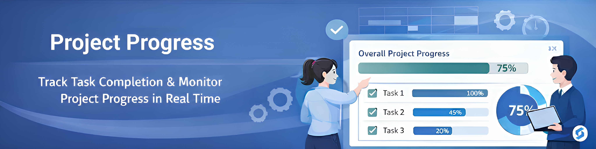

Project & Task Completion Tracking for Odoo
SGEEDE Project Progress adds clear and structured progress tracking to Odoo Projects. Teams can track task completion using percentages while overall project progress is calculated automatically in real time.
Default Odoo projects lack percentage-based progress tracking. This module provides instant visibility into task and project completion without complex reports or custom dashboards.
Works with Odoo Community and Enterprise editions.
Requires only the Project module.